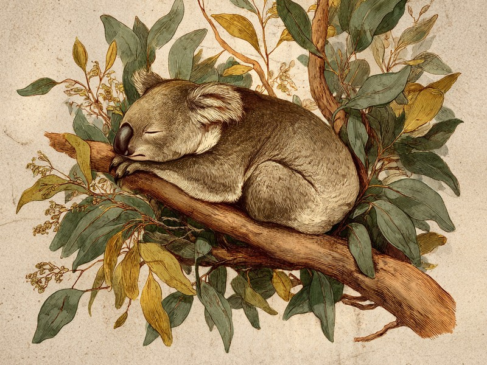

毒素入りで低栄養のユーカリを主食に選んでしまい、ほぼ一日中寝て省エネするしかなくなった「ざんねん」な生活設計。 Why do koalas sleep up to 20 hours a day? Their eucalyptus diet is so low in nutrients, and so toxic, that dozing is the only way to make it work.
1日のほとんどを、木の上で寝て過ごす
結論から言うと、コアラが起きているのは1日にせいぜい2〜6時間ほどで、残りはほぼ木の上でうとうとと休み続けています。コアラは1日のうちおよそ18〜22時間を睡眠に費やすと言われ、わずかな活動時間も多くはユーカリの葉を食べることに使われます。動物園で見かけるコアラがたいてい木の股に体を預けてじっとしているのは、たまたまではなく毎日のこと。ぐっすり眠るというより、うとうとと休み続けている状態で、動き回る姿を見られたら少しラッキーと言えるほどです。
主食のユーカリが、低栄養なうえに毒入り
ユーカリの葉は栄養価が低いうえに有害な化合物を含んでおり、その消化と解毒に大きなエネルギーを要することが、コアラの長時間睡眠につながっているとされています。コアラはこの葉を解毒しながら食べなければならず、ただでさえ少ないエネルギーを解毒処理にまで回す必要があるわけです。そのため動き回って体力を使う余裕がなく、活動をできるだけ抑えてエネルギーを節約する生活が定着したと考えられています。シドニー大学が公開している資料でも、コアラは消化に負担のかかるユーカリの葉に対応するよう体の仕組みが独自に適応していると紹介されており、低栄養で毒性もあるユーカリの消化・解毒に大きなエネルギーを要することが長時間の睡眠につながっている点は、オーストラリアコアラ基金(Australian Koala Foundation)の解説でも述べられています。本人に選び間違えたつもりはないのでしょうが、結果として一日中寝ているしかなくなった、なんとも「ざんねん」な食生活です。
出典: "Koalas' Diet & Digestion" Australian Koala Foundation, 2025. savethekoala.com
脳まで省エネ仕様で、頭蓋骨の中に隙間
コアラの脳は体重の約0.2%程度と小さく、表面のしわもほとんどなく、頭蓋骨の内部を満たしきれずに隙間ができている状態です。省エネ戦略は睡眠だけにとどまりません。この脳の重さは哺乳類の中でも小さい部類で、表面には多くの哺乳類に見られるしわがほとんどなく、つるりと滑らか。この小ぶりな脳も低栄養の食生活に合わせてエネルギー消費を抑える体の仕組みの一部だと考えられています。よく寝るのも脳が小さいのも方向性は同じ。ユーカリに一生を捧げた結果の、徹底した省エネ設計です。
「コアラベア」と呼ばれることもありますが、コアラはクマの仲間ではなく、カンガルーと同じ有袋類です。生まれたばかりの赤ちゃんは、母親のおなかの袋の中で育ちます。